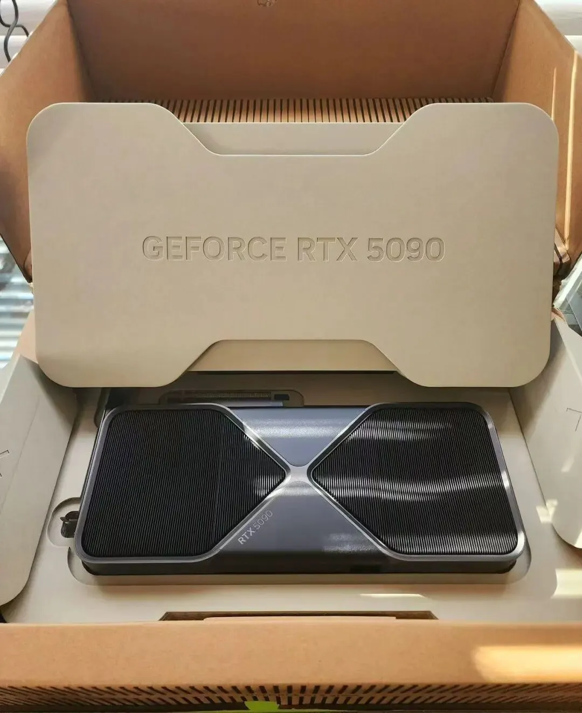
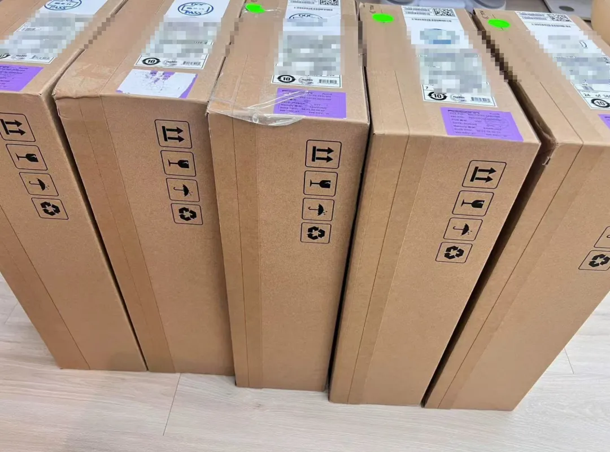
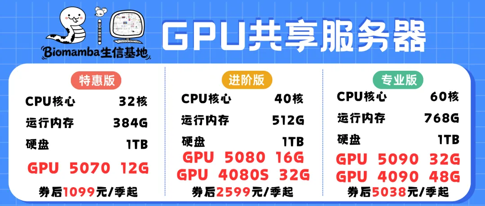
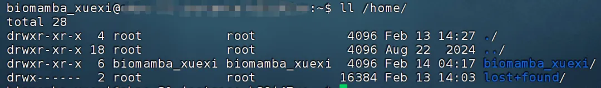

GPU一直在涨价，现有存货上机：RTX5090(32GB)、RTX4090(48GB)、RTX4080S(32GB)、5080(16GB)、5070(12GB)
原文：https://mp.weixin.qq.com/s?__biz=MzAwMzIzOTk5OQ==&mid=2247542992&idx=2&sn=7178eb133830baa07f9390e066dc059c&chksm=9b3c5180ac4bd896130cc45e5efffa9f1fb504677ae5264c3d492ea2315e7698c03c0418609f#rd 合集：服务器
一、 千呼万唤始出来
AI时代在向前走，我们也得顺应潮流，长期以来我们都在致力于提供大内存的CPU算力(足够支持你完成硕博生涯的生信环境)，是时候插上显卡啦，我们准备了一批RTX5090与5080、4090、RTX4080S、5070的显卡(终于可以不再用我的1650做加速了)。经过两年的开发与测试(共享的价格，独享的体验)，终于可以跟大家见面了，例如我们此前发布的利用GPU加速TensorFlow、部署本地DeepSeek，空间转录组学习手册合辑加速，就离不开显卡的并行加速计算。我们还组建了生信Linux交流群，欢迎大家入群交流！有任何问题都欢迎添加客服微信[Biomamba_zhushou]聊一聊。
访问链接：https://biomamba.xiyoucloud.net/


二、配置介绍
目前一共发布了三款产品，专业版为60核、768GB内存、GPU为RTX5090（32GB显存）；进阶版为40核、512GB内存、GPU为RTX4080S(16GB显存)；特惠版为32核、384GB内存、GPU为5070(12GB显存)。相信足够大家完成大部分的生信和机器学习加速需求。有需求的小伙伴不要错过~

三、环境优势
现在主流的的传统生信共享服务器，常在一台机器、一个Linux系统上用管理员账户创建多个账户(用户管理命令(useradd, passwd, userdel, su))，从而分发给不同的普通用户去使用。这种账户通常没有root权限、没有独立环境、安全等级较低，换言之：传统的共享服务器，可能有数据泄露风险！虽然说，我的数据可能自己都发表不出去，但咱也得把保密工作做好！
西柚云的大禹系统(足够支持你完成硕博生涯的生信环境)以其卓越的环境相互独立沙盒功能脱颖而出，为行业带来全新的解决方案。主要思路如下：
1、独立环境：用户之间完全隔离，确保数据防泄漏
(1)、传统共享服务器
传统共享服务器场景下，用户共享Rstudio同一文件系统与进程空间，即使通过权限控制也难以杜绝数据越界访问风险。某个用户的代码漏洞或恶意脚本可能通过共享目录、临时文件甚至内存空间窃取他人数据，这种"数据共处一室"的架构已成为生物信息等高敏感领域的安全隐患。而且给你开通账号的人是有root权限的，你的数据安全完全掌握在管理员手中，在系统里，你的数据无疑在裸奔。
(2)、西柚云大禹系统
通过创新的沙盒化隔离技术，为每个用户构建独立环境。从系统层面，大家都拥有自己的独立环境，大家可以在家目录下检查一下(ll /home/)，西柚云的服务器里除了这里自用账户"biomamba_xuexi"外，完全没有任何个人用户。"lost+found"文件属于root，用于数据恢复和管理。

2、操作独立：多元系统随心部署，高效协同
(1)、传统共享服务器
传统共享服务器场景下，所有用户受限于同一操作系统与软件生态，不同用户间常常面临软件版本冲突的尴尬，一旦版本不兼容，便陷入 “众口难调” 的困境。例如大家用的Rstudio与R包往往都是一个版本，而这些版本都是原先管理员预设好的。不能用R包的合适版本真的很痛苦，报错频出：一个我至少被问过30遍的monocle报错
(2)、西柚云大禹系统
虚拟机的出现打破了这一桎梏，每个虚拟机宛如独立星球，可自由安装迥异的操作系统与应用程序。无论是Windows还是Linux不同发行版，都可以在同一物理服务器上和谐共存，各自在其虚拟空间内高效运行，毫无兼容性纷扰。开发、测试、运维等多环节，都能依据特定需求打造专属运行环境，工作效率瞬间拉满。
3、故障隔离：系统稳定运行，风险无忧
(1)、传统共享服务器
传统共享服务器场景下，用户在系统中犹如串联电路(一条绳上的蚂蚱)，一旦某处故障，往往牵一发而动全身。一个用户误操作、某个软件漏洞或程序崩溃，都可能引发系统级连锁反应，机器里的其他用户无辜受牵连，业务中断损失难估。
(2)、西柚云大禹系统
虚拟机则构筑起坚固的 “防火长城”，各虚拟机间相互隔离，故障传播路径被彻底阻断。假设某个虚拟机遭遇致命错误，只影响该用户自己的环境，其它用户使用完全不会被波及。即使是计算节点崩溃了，也可以一键切换空闲计算节点，逃之夭夭。
4、资源隔离：专属运行防线，效率提升
(1)、传统共享服务器
传统共享服务器场景下，所有用户共享底层物理资源，一个用户运行大型程序，就可能抢占大量内存与CPU，导致其他用户操作卡顿，系统整体性能受限。不知道大家有没有在服务器群里和其它用户吵架的经历(绷不住了)。一个大任务可能就会让同台服务器的所有其它用户干瞪眼。
(2)、西柚云大禹系统
而西柚云的虚拟机系统凭借先进虚拟化技术，为每个虚拟机精心打造相互隔离的虚拟环境。计算资源精准分配，内存、存储和网络资源也 “各自圈定领地”。这种深度隔离，如同为每个系统构建起专属的 “金丝雀笼”，不同虚拟机间资源往来 “老死不相往来”，彻底避免了资源冲突和性能干扰，系统稳定性与安全性得以质的飞跃。
5、安全维度：抵御黑客入侵，守护数据防线
(1)、传统共享服务器
传统共享服务器场景下，黑客一旦利用系统或软件漏洞攻破防线，获取管理员权限，便如同拿到 “万能钥匙”，可在系统内横行无忌，用户数据与系统资源瞬间置于危险境地。
(2)、西柚云大禹系统
在安全性方面，虚拟机的独立性同样大放异彩。资源的深度隔离让黑客入侵难度呈指数级上升。即使某个虚拟机被攻陷，攻击者也难以突破虚拟化技术构建的隔离屏障，进而威胁到其他虚拟机或宿主机的管理员权限。这为整个系统构建起强大的安全防御矩阵，为数据安全筑牢防线。当然这不仅有数据防盗安全，还可以在关键时刻救回你的数据：大家的宝贝数据怎么存储才最安全。
6、小结
西柚云在行业里卷技术，希望大家都能够拥有更多的操作权限(有root权限的共享服务器)、更安全的操作环境！这是一场替用户发起的革命，在资源隔离、操作独立、故障隔离及安全保障等层面，西柚云不仅重新定义了服务器运行规则，更为企业提供了高效、稳定与安全的数字化运行环境。希望大家以后无论在什么平台，使用服务器的时候都可以向乙方问一嘴，数据是否安全？产品有没有独立环境？用户能不能拥有root权限？
四、最后
CPU产品也仍然发行，欢迎大家联系客服微信[Biomamba_zhushou]优惠下单。
 如果你还不能熟练使用Linux，那么你可以先行学习Linux教程：十小时学会Linux
生信Linux及服务器使用技巧也可以来找找组织：生信Linux交流群
大家可按需选用适合自己的计算资源：共享(经济实惠)：足够支持你完成硕博生涯的共享服务器独享(省电省心)：生信分析不求人
如果你还不能熟练使用Linux，那么你可以先行学习Linux教程：十小时学会Linux
生信Linux及服务器使用技巧也可以来找找组织：生信Linux交流群
大家可按需选用适合自己的计算资源：共享(经济实惠)：足够支持你完成硕博生涯的共享服务器独享(省电省心)：生信分析不求人
访问链接：https://biomamba.xiyoucloud.net/
更多内容可咨询客服微信[Biomamba_zhushou]

欢迎交流

 留一个领取资料、开箱即用的单细胞分析镜像的助手[Biomamba_zhushou]，方便各位随时交流。同时我们也构建了交流群矩阵，欢迎大家一起讨论。
留一个领取资料、开箱即用的单细胞分析镜像的助手[Biomamba_zhushou]，方便各位随时交流。同时我们也构建了交流群矩阵，欢迎大家一起讨论。
 您点的每个赞和在看，我都认真当成了喜欢
您点的每个赞和在看，我都认真当成了喜欢